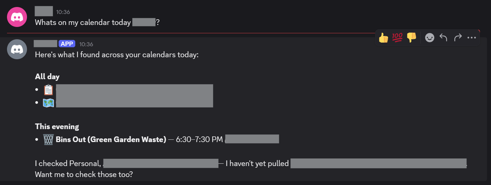
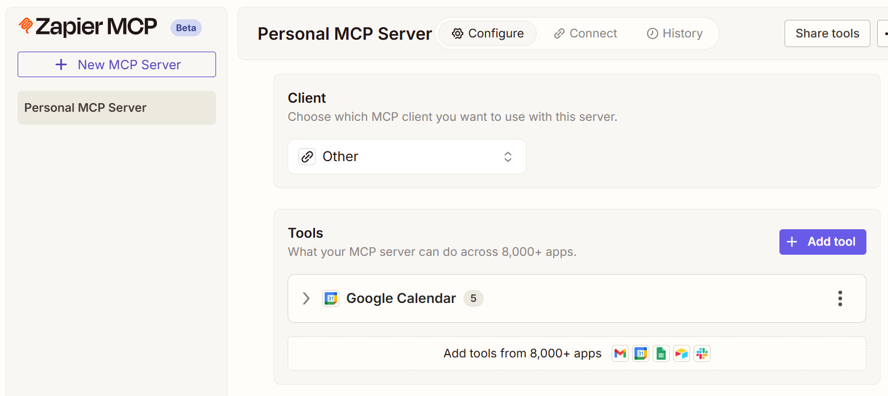

OpenClaw: Running a Secure, Capable, Low Cost Claw (with Hetzner, Tailscale, Discord and Zapier MCP)
Update: I've since replaced Zapier with a private custom MCP server that handles the Google API integration. It was less convenient than Zapier, since I had to build it, but it gives me control over the response sizes to keep context size down and it's essentially free to run.
Curiosity has got the better of me, and I've decided to tinker with OpenClaw. I'm also motivated by by a) the challenge of running OpenClaw securely at every level (machine isolation, network isolation and protection of personal data) and b) showing people that you don't need a Mac Mini, or even a dedicated device to do it (and there by saving many personal budgets and the planet at the same time!).
TLDR: The result - Google Calendar summary via Discord, OpenClaw and Zapier:

First off, where do we put this?
The Server (Cost Efficiency)
OpenClaw has gained notoriety for running globally on the hardware it is installed via a global npm install npm install -g openclaw@latest. OpenClaw is powerful in that it potentially has access to everything on the machine, including its own installation and configuration data (including any SSH / API keys on the device). To mitigate the risk, people are buying Mac Mini's to isolate OpenClaw, but this is expensive and overkill.
Instead, I set up a Hetzner Cloud Server.
I had to go with what they had, since Hetzner servers are seeing huge demand recently. The server below is more than fast enough, and keeps my costs down to approx €6 per month (which is a lot cheaper and more environmentally friendly than buying a dedicated machine for might just be an experiment). You can get cheaper cost optimised servers if available, which will also be fine. I ended up with:
CPX22 x86 2 VCPU, 4GB memory
Dedicated SSH Key (Security)
I created a dedicated SSH key for this Hetzner server. While we're going to lock down access so that the server cannot be reached publicly - the risk that the key might be exposed is still present and so should be unique to this server.
Tailscale Configuration (Security)
The first thing I did after connecting was to install Tailscale and add the node to my tailnet. Tailscale by default creates a network, so it's important to configure tags and ACLs so that the open claw server can't connect to anything else on your tailnet. Another reason we're using Tailscale is so that we can provide a private connection to the OpenClaw web dashboard when it's up and running.
To achieve this, I have my tailnet configured with admin and infra nodes. admin nodes can connect to infra nodes but not vice-versa, and infra nodes cannot connect to each other. The OpenClaw server is obviously, an infra node here.
"grants": [
// Allow admin tagged devices to access all devices
// and ports on the tailnet. Infra devices (tag:infra) have no matching grant and
// cannot initiate connections to any other device (implicit deny).
{
"src": ["tag:admin"],
"dst": ["*"],
"ip": ["*"],
},
// Allow users in "group:example" to access "tag:example", but only from
// devices that are running macOS and have enabled Tailscale client auto-updating.
// {"src": ["group:example"], "dst": ["tag:example"], "ip": ["*"], "srcPosture":["posture:autoUpdateMac"]},
],
Firewall (Security)
With the server setup with the tailnet, we can now apply a firewall on the Hetzner dashboard. We set up the firewall to:
- Block all inbound access (including SSH)
- Allow all outbound access
We now SSH in via the tailnet, which allows our connection while any SSH connection attempts via the hosts public IP are blocked.
Installing OpenClaw
We're now ready to install OpenClaw. The specifics of setting up and much of the initial configuration are outside the scope of this write-up though.
Having followed the TUI prmpts to get OpenClaw set up, we now have the directory where OpenClaw will maintain it's data.
~/.openclaw
Tailscale Configuration for Openclaw
Since we are using a private tailnet, we can disable other authentication. The configuration of the UI below also shows configuration for binding the server to the loopback address for web UI access.
"gateway": {
"controlUi": {
"dangerouslyDisableDeviceAuth": true
},
"port": 18789,
"mode": "local",
"bind": "loopback",
To serve over HTTPS, which the OpenClaw UI requires for some application features. We will use tailscale serve. Ensure that you DO NOT include the set up of Tailscale funnel, which allows public traffic to access the server, and defeats the point of the tailnet setup.
tailscale serve --bg 18789
Observability (Security)
To keep an eye on what OpenClaw is upto, I set up a Git repository to track the OpenClaw install's state. Intemittently, I will commit and commit the contents of ~/.openclaw to the repository, so I can track what configuration I and OpenClaw itself change as configuration progresses.
Note that is a local Git repository only. While a Git origin server could be configured, there is going to be sensitive data such as API keys in the application state and the less places this information is replicated, the less of a security risk this is.
Backup
Backups can be achived via Hetzner snapshots. OpenClaw can modify it's own configuration and some of its code. This seems like something that could go wrong, so periodic snapshots seem sensible just in case this proves useful.
Model Selection (Security, Cost Efficiency)
The OpenClaw founder Peter Steinberger specifically recommends NOT using low cost models or weak local models as they are gullible and more susceptible to prompt injection than larger models such as Claude Sonnet 4.6 or Claude Opus 4.6. That said, OpenClaw can go through tokens fast, and so Sonnet is probably the more practical selection. Some recommend using a dual model approach, or even using local models to avoid remote model costs, but this requires the hardware (Mac Minis) etc to be able to run them, and does not address the aforementioned prompt injection susceptibility issue.
Model API Budgets and Limits (Cost Efficiency)
If you don't like nasty surprises, I would strongly advise setting cost limits and budgets when using remote models. If using Claude AI, you can set these here:
https://platform.claude.com/settings/limits
Personal Data Access and Safety (Privacy, Security)
To make OpenClaw useful, you're likely to want to give it access to personal data outside of what you directly tell OpenClaw.
This is a multi-layered issue. Careful consideration needs to be given to every decision to provide data to OpenClaw. For me, the way to do this is via channel selection (Discord only) and proxying cloud service data access via Zapier MCP Servers.
Zapier MCP has proven to be by far the most convenient (which makes paying attention to security easier) means of configuring access to personal data.
Channel Selection - Discord vs Whatsapp
I haven't yet assessed Telegram and believe it sits in the middle of Whatsapp and Discord in terms of privacy control, Whatsapp access made me uncomfortable due to the potential unpredictability of what OpenClaw might do with that access and because. Because OpenClaw’s WhatsApp bridge essentially acts as a "linked device," it operates on a push-based architecture. This means every notification hitting your account - from private DMs to busy group chats is pushed to the OpenClaw Gateway. From a privacy perspective, this is "global" access; the agent is technically a silent observer of your entire account, and you are relying on OpenClaw’s internal logic to "ignore" what it shouldn't see.
Discord, by contrast, operates on a scoped permission model enforced at the platform level. A Discord bot is physically blind to your world until specific gates are opened.
-
The Invitation: It must be explicitly invited to a specific server.
-
The Channel Gate: It can only see messages in channels where it has been granted "View Channel" permissions.
-
The Intent Gate: Specifc intents must be allowed in the Developer Portal.
On Discord, the platform decides what the bot sees; on WhatsApp, the bot decides what to ignore.
This is an important concept: Platform level controls are deterministic where bot decisions are probabilistic. Use platform level controls wherever possible.
Zapier MCP Server (Security)
Rather than setting up access keys and scopes via Google Cloud Console, Zapier have MCP server tooling, which makes for a convenient way to bundle all of your personal data access in one place. Zapiers UI makes it easy to configure permissions on a per provider basis.
For example, I have linked my Google Account with Calendar read only permissions. Zapier triggers the Google OAuth flow for granting the required permissions.
https://mcp.zapier.com/mcp/servers/

Once configured, you give OpenClaw the Zapier MCP Server token.
https://mcp.zapier.com/api/v1/connect?token=xxxxxxxx
This is where OpenClaw showed real capability. I was able to give OpenClaw the token in chat, and it configured access to the server itself. It even recommended restrictions on the mcporter configuration, applied them and restarted it's own service.
OpenClaw now has a single MCP server that it can use to discover and combine my personal data sources which I hope can make it truly useful. Importantly, I have retained fine grain and easy control over the way in which OpenClaw can interact with each service.
Read vs Write - Your Choice (Privacy, Security)
Once you have your Zapier MCP server configured in OpenClaw, you can add and remove access to thousands of integrations as required.
How far you go with this, how useful you make OpenClaw is up to you.
Conclusion
I'm more impressed than I expected to be, but the major unlock that stops this from being more hassel than it's worth is the Zapier MCP integration. As of now I have something that feels like a real personal assistant, accessible via a user friendly chat interface in Discord, and I'm quite pleased with that.
I'm hitting Claude API rate limits too quickly for my liking, but this is a Claude limitation, not a limitation of this setup.
No doubt as LLMs get more capable and costs go down, these sorts of issues will be mitigated and 'Claws' like OpenClaw, will become truly useful personal assistants. Not everyone has the technical skill to secure an installation of OpenClaw in its current state of development, but the set up and configuration will become more user friendly over time.
OpenClaw and Zapier are in my mind, glue, but I think this glue has the potential to be very powerful. I don't doubt that now we have been shown what can be done and how to achieve it, along with what sorts of problems need to be solved, many more options for achieving similar capability will be along soon.